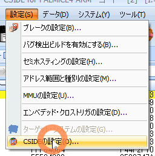
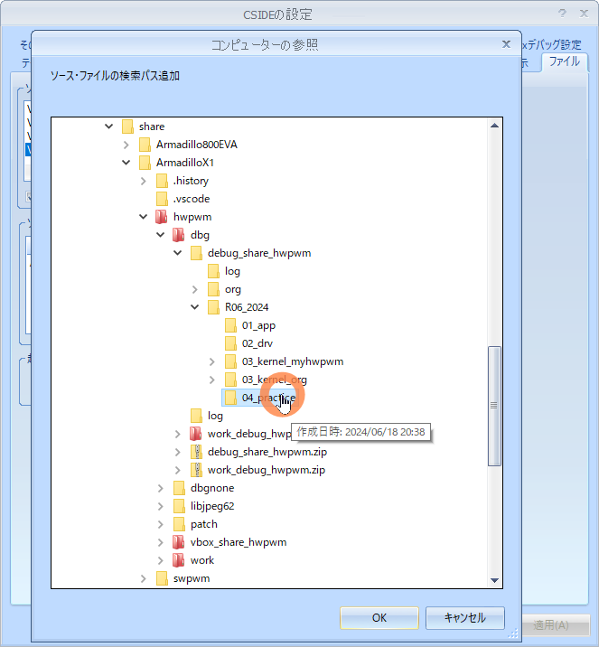
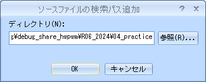
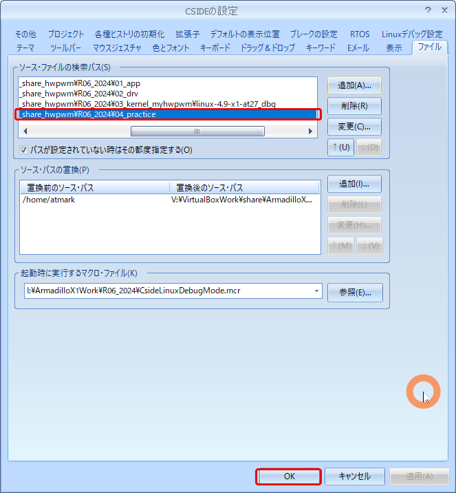

組込みLinux アプリケーションデバッグ開発環境の構築
| No | *.ova | 概要 | ドキュメント |
|---|---|---|---|
| Last | ArmadilloX1BusterNSK.ova | NSK導入研修後のDebugありHWPWM 構築 | linux-4.9-x1-at27_dbg_hwpwm.md |
保存場所: H:\VirtualMachines\ArmadilloX1Buster\20240424_ArmadilloX1Buster_bootmgLCD
| No. | name | 概要 | ドキュメント |
|---|---|---|---|
| 0 | ArmadilloX1BusterNSKhwpwm_start.ova ※1 | 20GBから100GBへ拡張 | 20240525_20GBto100GB.md |
| 1 | ArmadilloX1BusterNSKhwpwm_org.ova | 共有フォルダ、ATDE8のカスタマイズ | 20240602_ArmadilloX1BusterNSKhwpwm_org.md |
| 2 | ArmadilloX1BusterNSKhwpwm_base.ova | カスタマイズ他 | 20240604_ArmadilloX1BusterNSKhwpwm_base.md |
| 3 | ArmadilloX1BusterNSKhwpwm_start.ova | ArmadilloX1起動 | 20240612_ArmadilloX1BusterNSKhwpwm_start.md |
| 4 | ArmadilloX1BusterNSKhwpwm_cside.ova | CSIDEによるデバッグ環境構築 | 20240623_ArmadilloX1BusterNSKhwpwm_cside2.md |
| 5 | ArmadilloX1BusterNSKhwpwm_vscode.ova | VSCodeによるRemoteSSH | 20240627_ArmadilloX1BusterNSKhwpwm_vscode.md |
| 6 | ArmadilloX1BusterNSKhwpwm_appdbg.ova | このドキュメント | 20240702_00start.md |
※1 ArmadilloX1BusterNSKhwpwm_start.ova の _start は間違い
R5_2023はSWPWM（ソフトウェアPWM）のデバッグなしとデバッグあり で構築
R6_2024はHWPWM（ハードウェアPWM）のデバッグなしとデバッグあり で構築
| No. | name | 保存場所 |
|---|---|---|
| 1 | ArmadilloX1BusterNSKhwpwm_org.ova | H:\VirtualMachines\ArmadilloX1Buster\20240531_ATDE8-20230127_org_* |
| 2 | ArmadilloX1BusterNSKhwpwm_base.ova | H:\VirtualMachines\ArmadilloX1Buster\20240531_ATDE8-20230127_base_* |
| 3 | ArmadilloX1BusterNSKhwpwm_start.ova | H:\VirtualMachines\ArmadilloX1Buster\20240604_ATDE8-20230127_start_* |
| 4 | ArmadilloX1BusterNSKhwpwm_cside.ova | H:\VirtualMachines\ArmadilloX1Buster\20240604_ATDE8-20230127_cside_* |
| 5 | ArmadilloX1BusterNSKhwpwm_appdbg.ova | H:\VirtualMachines\ArmadilloX1Buster\20240624_ATDE8-20230127_appsbg_* |
※ 1204室と1405室の2種類ある
| No. | name | 説明 |
|---|---|---|
| 1 | 20240623_appdbg_before | ArmadilloX1BusterNSKhwpwm_appdbg.ova インポート直後 |
user@1204PC-Z490M:/mnt/v/VirtualBoxWork/share/ArmadilloX1/hwpwm/work$ tree -aF -L 3 R06_2024/
R06_2024//
├── Application/ <──────────────── Linuxアプリケーション開発（利用しないこと）
│ └── text/
│ ├── practice/ <─────────── 例題（利用しないこと）
│ └── practice-example/ <─── 課題のサンプルソース（利用しない）
├── Application_debug/ <────────── Linuxアプリケーションデバッグ開発（R06_2024はこちらのディレクトリ）
│ └── text/
│ ├── practice/ <─────────── 例題
│ └── practice-example/ <─── 課題のサンプルソース（配布時は空）
├── Extra/ <────────────────────── Webカメラを利用したLinuxアプリケーション開発
├── Extra_debug(未完成)/ <──────── Webカメラを利用したLinuxアプリケーションデバッグ開発
├── RemoteControl/ <────────────── 標準課題「遠隔監視システムの構築」
└── RemoteControl_debug(未完成)/ <─ 標準課題「遠隔監視システムの構築」デバッグ開発
practice-example ディレクトリはサンプルソースあり
user@1204PC-Z490M:/mnt/v/VirtualBoxWork/share/ArmadilloX1/hwpwm/work/R06_2024/Application_debug/text/practice$ tree -aF -L 3
./
├── 01.hello/
│ ├── article.txt* <───── 課題1 対象ファイル
│ ├── count.c* <───── 課題1 ファイル読込み
│ ├── hello.c* <───── 例題
│ ├── Makefile* <───── /work/linux/nfsroot/debug/04_practice へコピー
│ ├── rot13.c* <───── 課題2 ファイル書込み
│ └── sigtest.c* <───── 課題3 シグナル
│
├── 02.led/
│ ├── drivers/
│ │ └── leds/
│ │ ├── leds.c* <───── ドライバソース
│ │ └── Makefile* <───── ドライバ用Makefile
│ ├── ldmeter.c* <───── 例題 デバイス制御用ソース
│ ├── ledctl.c* <───── 課題 デバイス制御用ソース
│ └── Makefile* <───── デバイス制御用Makefile
│
├── 03.button/
│ ├── btevent.c* <───── 例題 デバイス制御用ソース
│ ├── btlaunch.c* <───── 課題2 デバイス制御用ソース
│ ├── btled.c* <───── 課題1 デバイス制御用ソース
│ ├── button.cmd* <───── 課題2 コマンドリスト
│ ├── drivers/
│ │ ├── buttons/
│ │ │ ├── buttons.c* <───── ドライバソース
│ │ │ └── Makefile* <───── ドライバ用Makefile
│ │ └── leds/
│ └── Makefile* <───── デバイス制御用Makefile
│
├── 04.sensor/
│ ├── asevent.c* <───── 例題 デバイス制御用ソース
│ ├── asled.c* <───── 課題1 デバイス制御用ソース
│ ├── drivers/
│ │ ├── acceleration/
│ │ │ ├── acceleration.c* <───── ドライバソース
│ │ │ └── Makefile* <───── ドライバ用Makefile
│ │ └── leds/
│ └── Makefile* <───── デバイス制御用Makefile
│
├── 05.motor/
│ ├── drivers/
│ │ ├── buttons/
│ │ ├── leds/
│ │ └── motor/
│ │ ├── Makefile* <───── ドライバ用Makefile
│ │ └── motor.c* <───── ドライバソース
│ ├── Makefile* <───── デバイス制御用Makefile
│ ├── mtctl.c* <───── 例題 デバイス制御用ソース
│ ├── mtfan2.c* <───── 課題2 デバイス制御用ソース
│ └── mtfan.c* <───── 課題1 デバイス制御用ソース
│
├── 06.d7seg/
│ ├── d7ctl.c* <───── 例題 デバイス制御用ソース
│ ├── d7fan.c* <───── 課題1 デバイス制御用ソース
│ ├── drivers/
│ │ ├── buttons/
│ │ ├── d7seg/
│ │ │ ├── d7seg.c* <───── ドライバソース
│ │ │ └── Makefile* <───── ドライバ用Makefile
│ │ ├── leds/
│ │ └── motor/
│ └── Makefile* <───── デバイス制御用Makefile
│
├── 07.charlcd/
│ ├── clclock.c* <───── 課題1 デバイス制御用ソース
│ ├── clctl.c* <───── 例題 デバイス制御用ソース
│ ├── drivers/
│ │ └── clcd/
│ │ ├── cgram/
│ │ │ ├── default.h* <─────
│ │ │ └── swedish.h* <─────
│ │ ├── charmap.h* <─────
│ │ ├── commands.h* <─────
│ │ ├── compat.h* <─────
│ │ ├── config.h* <─────
│ │ ├── hardware.h* <─────
│ │ ├── hd44780.c* <───── モジュールソース
│ │ ├── hd44780.h* <───── モジュールヘッダ
│ │ ├── Kconfig* <─────
│ │ ├── lcd-linux.c* <───── ドライバソース
│ │ ├── lcd-linux.h* <───── ドライバヘッダ
│ │ ├── Makefile* <───── ドライバ用Makefile
│ │ └── Makefile-2.6*
│ └── Makefile* <───── デバイス制御用Makefile
│
├── 08.lcd/
│ ├── bitmap/
│ │ ├── 1-sea.bmp* <───── 課題2用ビットマップファイル
│ │ ├── 2-park.bmp* <───── 課題2用ビットマップファイル
│ │ ├── 3-church.bmp* <───── 課題2用ビットマップファイル
│ │ └── 4-factory.bmp* <───── 課題2用ビットマップファイル
│ ├── colorbar.c* <───── 課題1 デバイス制御用ソース
│ ├── dispbmp.c* <───── 課題2 デバイス制御用ソース
│ ├── lcdclear.c* <───── 例題 デバイス制御用ソース
│ ├── Makefile* <───── デバイス制御用Makefile
│ └── primcol.rgb* <───── 24ビット非圧縮ビットマップ画像ファイル
│
├── 09.touchpanel/
│ ├── Makefile* <───── デバイス制御用Makefile
│ ├── stamp.bmp* <───── 課題2用ビットマップファイル
│ ├── tpevent2.c* <───── 課題1 デバイス制御用ソース
│ ├── tpevent.c* <───── 例題 デバイス制御用ソース
│ └── tpstamp.c* <───── 課題1 デバイス制御用ソース
│
├── 10.gui/
│ ├── drivers/
│ │ ├── leds/
│ │ └── motor/
│ ├── guipanel.c* <───── 課題 デバイス制御用ソース
│ ├── image.bmp* <───── 課題用ビットマップファイル
│ └── Makefile* <───── デバイス制御用Makefile
│
├── 11.network/
│ ├── dccli.c* <───── クライアントアプリケーション(ATDE8)
│ ├── dccmd.h* <───── コマンド
│ ├── dcsrv.c* <───── サーバーアプリケーション(ArmadilloX1)
│ ├── drivers/
│ │ ├── leds/
│ │ └── motor/
│ ├── Makefile* <───── デバイス制御用Makefile
│ └── netpanel.c* <───── GUIクライアントアプリケーション(ArmadilloX1)
│
└── 12.webapp/
├── devctl.c* <─────課題
├── drivers/ <───── デバイスドライバ
│ ├── leds/ <───── Nginx は デバイスファイルの chmod 必要
│ └── motor/ <───── Nginx は デバイスファイルの chmod 必要
└── image/
├── arrow_l.jpg* <───── 画像ファイル
├── arrow_r.jpg* <─────
├── fan_off.jpg* <─────
├── fan_on.jpg* <─────
├── light_off.gif* <─────
└── light_on.gif* <─────
atmark@atde8:~$ tree -aF -L 3 /work/linux/nfsroot/var/www/
/work/linux/nfsroot/var/www/
├── cgi-bin/ <───── Nginx FastCGI 保存場所
│ ├── devctl.cgi* <───── 課題
│ ├── index.cgi* <───── テスト用（c言語）
│ └── index.py* <───── テスト用（python）
└── html/ <───── ドキュメントルート
├── image/ <───── 画像ファイル保存場所
│ ├── arrow_l.jpg* <───── 12.webapp/image からコピーしてきた画像ファイル
│ ├── arrow_r.jpg*
│ ├── fan_off.jpg*
│ ├── fan_on.jpg*
│ ├── light_off.gif*
│ └── light_on.gif*
└── index.nginx-debian.html <───── Nginx index.html
CSIDE によるデバッグ情報付き実行ファイルのディレクトリを新規作成
atmark@atde8:/work/linux/nfsroot/debug$ ls -al
合計 16
drwxr-xr-x 4 root root 4096 6月 3 11:45 .
drwxr-xr-x 18 root root 4096 6月 10 20:09 ..
drwxr-xr-x 2 root root 4096 6月 15 19:24 01_app
drwxr-xr-x 2 root root 4096 6月 16 19:18 02_drv
atmark@atde8:/work/linux/nfsroot/debug$ sudo mkdir 04_practice
[sudo] atmark のパスワード:
atmark@atde8:/work/linux/nfsroot/debug$ ls -al
合計 20
drwxr-xr-x 5 root root 4096 6月 28 20:45 .
drwxr-xr-x 18 root root 4096 6月 10 20:09 ..
drwxr-xr-x 2 root root 4096 6月 15 19:24 01_app
drwxr-xr-x 2 root root 4096 6月 16 19:18 02_drv
drwxr-xr-x 2 root root 4096 6月 28 20:45 04_practice
atmark@atde8:/work/linux/nfsroot/debug$
CC = arm-linux-gnueabihf-gcc
TARGET = hello
all: $(TARGET)
clean:
rm -f $(TARGET)
CFLAGS = -gdwarf-2 -O0 を追加
install を追加
CC = arm-linux-gnueabihf-gcc
#TARGET = hello count rot13 sigtest
TARGET = hello <────── その都度変更
CFLAGS = -gdwarf-2 -O0
all: $(TARGET)
install :
cp -p $(TARGET) /work/linux/nfsroot/debug/04_practice
cp -p $(TARGET) /media/sf_ArmadilloX1/hwpwm/dbg/debug_share_hwpwm/R06_2024/04_practice
cp -p $(TARGET).c /media/sf_ArmadilloX1/hwpwm/dbg/debug_share_hwpwm/R06_2024/04_practice
clean:
rm -f $(TARGET)
V:\VirtualBoxWork\share\ArmadilloX1\hwpwm\work\R06_2024\Application_debug\text\practice-example\02.led\drivers\leds
KERNELDIR = /home/atmark/linux-4.9-x1-at27
ARCH = arm
PREFIX = arm-linux-gnueabihf-
MOD_PATH = /work/linux/nfsroot
obj-m := leds.o
modules:
$(MAKE) -C $(KERNELDIR) M=`pwd` ARCH=$(ARCH) CROSS_COMPILE=$(PREFIX) modules
modules_install:
$(MAKE) -C $(KERNELDIR) M=`pwd` ARCH=$(ARCH) INSTALL_MOD_PATH=$(MOD_PATH) modules_install
clean:
$(MAKE) -C $(KERNELDIR) M=`pwd` clean
KERNELDIR=/home/atmark/linux-4.9-x1-at27 を KERNELDIR=/home/atmark/linux-4.9-x1-at27 _dbgへ変更
EXTRA_CFLAGS += -gdwarf-2 -O0 を追加
myinstall コマンドを追加
KERNELDIR = /home/atmark/linux-4.9-x1-at27_dbg
ARCH = arm
PREFIX = arm-linux-gnueabihf-
MOD_PATH = /work/linux/nfsroot
EXTRA_CFLAGS += -gdwarf-2 -O0
obj-m := leds.o <────── その都度変更
modules:
$(MAKE) -C $(KERNELDIR) M=`pwd` ARCH=$(ARCH) CROSS_COMPILE=$(PREFIX) modules
modules_install:
$(MAKE) -C $(KERNELDIR) M=`pwd` ARCH=$(ARCH) INSTALL_MOD_PATH=$(MOD_PATH) modules_install
myinstall:
cp -p *.ko /media/sf_ArmadilloX1/hwpwm/dbg/debug_share_hwpwm/R06_2024/04_practice
cp -p *.c /media/sf_ArmadilloX1/hwpwm/dbg/debug_share_hwpwm/R06_2024/04_practice
clean:
$(MAKE) -C $(KERNELDIR) M=`pwd` clean

追加ボタンをクリック後、参照ボタンをクリック

OKボタンをクリック

